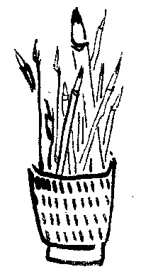

美術面に於て、現存者から師を仰ぐことはなかなかむつかしい。先輩はあつても其の人が、何等かに偏し、且つ其道の一つに囚はれてゐるからである。之等の一人二人を師と仰ぎ只管教へを乞ふとせば、必ず後日悔を遺さねばならない。
例へば、画青年が梅原、安井を択ぶとせよ、又、古径、靫彦に師事したとせよ、何れを択んだとしても、真の自由は失なはれ視野はせばまつてゆく。謂ふ所の自由と自然なるものを見捨てねばならない羽目に堕ち入る。これで悔を遺さぬ者ありとせば、それは元々禄でもない徒輩である。私は敢て美術青年に警告してみたい。君等が師と仰ぎ師事せんとするならば、少くとも先づ二百年、三百年の昔の美術に注目せよ。五百年、千年、二千年、否もつともつと先の年代に成る幾多の作品に眼を移して視よ。そしてその年代の人間は、天地を貫ぬく自然の美妙を如何に観たか。そして如何に道理にそむくことなく、素直に美しいものを造り遺していつたかに注目せよ。無理やりに生き続けてゐる今時の先生などに眼をくれて、あれこれ調法しやうとか、金をかけるなどは、自分の生き方に眼が覚めてゐないこととなる。
作陶に例をとつてみるならば、無釉時代の技能と精神とに着目すべきである。更に五百年、千年、二千年、否もつともつとさかのぼつた所に注意するが可い。注目すべき作家が画の世界にも、彫刻、工芸の世界にも数々遺されてゐる。遠い昔の人間は今の人間からみると、はるかに純情であつたやうだ。恰も幼児のやうにである。日出づれば起きて働き、日没すれば安臥すると云ふ、いとも自然なる生活である。自然美に富んだ作品が生れ出づるのは当然の帰趨である。
私はこの古い昔の人達の遺した作品を師と仰げと言ふのである。何を戸惑して今時の先生から芸美を学ばんとしてゐるのか。束縛を受けながらも一人の先生に師事して学ぶ要のあつたのは、過去の事である。古美術が遺つてゐる。写真製版が世界中の美術を観せてくれる。活字がありとあらゆることを教へてくれる世の中となつてゐる。一人の師を仰ぐ要は無くなつてゐるのである。
（昭和二十八年 原文のまま）
